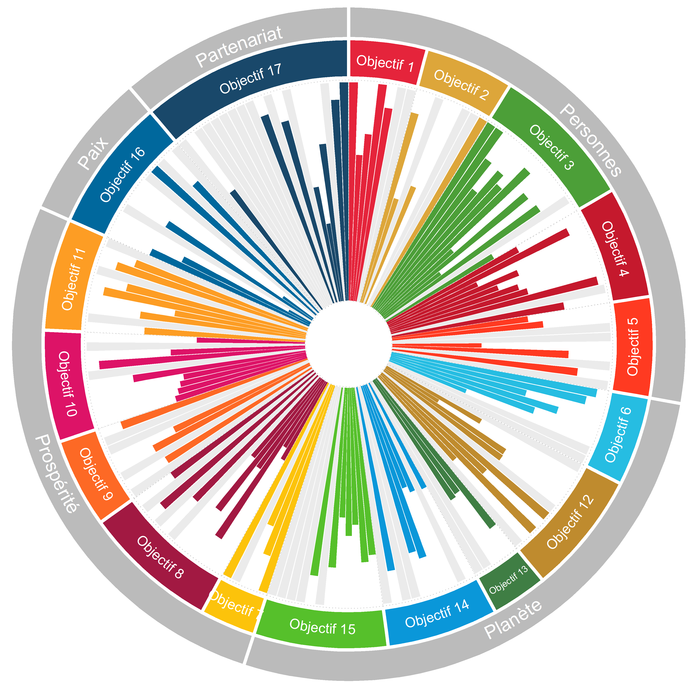

<doctype HTML>
    <meta charset="utf-8">
    <meta name="viewport" content="width=device-width">
    <head>
	    
        <script src="https://code.jquery.com/jquery-3.5.0.js"
            integrity="sha256-r/AaFHrszJtwpe+tHyNi/XCfMxYpbsRg2Uqn0x3s2zc=" crossorigin="anonymous"></script>
        <link href="https://cdnjs.cloudflare.com/ajax/libs/select2/4.0.9/css/select2.min.css" rel="stylesheet" />
        <script src="https://cdnjs.cloudflare.com/ajax/libs/select2/4.0.9/js/select2.full.min.js"></script>
        <link
            href="https://fonts.googleapis.com/css?family=Noto+Sans:400,400i,700,700i|Oswald:200,300,400,500,600,700&display=swap&subset=latin-ext"
            rel="stylesheet">
        <link rel="stylesheet" type="text/css" href="css/bootstrap.min.css">
        <link rel="stylesheet" type="text/css" href="css/site.css">
        <script src="libs/d3.v4.min.js"></script>
        <script src="libs/d3.v4.jetpack.min.js"></script>
        <script src="libs/d3-queue.v3.min.js"></script>
        <link rel="icon" href="img/favicon.ico">
	    <base target="_PARENT">
        <script>
            dataLayer = [{
                "siteName": "gitvfd.github.io/WISE-SDG-WHEEL",
                "siteEnvironment": "live",
                "pageLanguage": "en",         // or "en" or "es"
                "contentLanguage": "English",  // or "English" or "French"
                "pageTopic": "",
                "pageSubTopic": "",
                "pageCountry": "",
                "pageCategory": ""
            }];

        </script>       
        <!-- Google Tag Manager -->
        <!--End Google Tag Manager -->
    </head>

    <body>
        <!-- Google Tag Manager (noscript) -->
        <!--End Google Tag Manager (noscript) -->
        <div id="app">
            <div id="modedemploi">
                <!--<div id="intromodedemploi">Select a country:
                </div>-->
                <div id="selCountry">
                    <select id="country_dropdown" onchange="updateChart(value)">
                    </select>
                </div>
        	</div><Br/>

		<div id="wheel_app">
            <a  id="wheelLink"  href="https://www.oecd.org/fr/data/dashboards/the-oecd-hub-on-sustainable-development-goals/distance-to-achieving-sdgs.html?oecdcontrol-a499c1a199-var1=OECD"  target="_parent" ></a>
		</img>

	            <div class="overlay" id="wheel_popup">
                	<a id="countryLink" href="https://www.oecd.org/fr/data/dashboards/the-oecd-hub-on-sustainable-development-goals/distance-to-achieving-sdgs.html?oecdcontrol-a499c1a199-var1=OECD" target="_parent" >Voir les données détaillées de l'OCDE </a>
            		</div>
       		 </div>
        </div>
    </body>


    <script type="text/javascript">


	$(document).ready(function () {
		$('#country_dropdown').select2({ containerCssClass : 'my-custom-class'})
    });

	    $(document).ready(function() { 
        $("#country_dropdown").select2({ width: 'resolve' });           
});
    var chartList=[];
    var urls = {
        charts: "charts.tsv"
    }

	d3.queue()
	    .defer(d3.tsv, urls.charts)
	    .await(setDropdown);


	function setDropdown(err,data){
	    data.forEach(function(d){
            var x = document.getElementById("country_dropdown");   
            var option = document.createElement("option");
            option.value = d.ISO;
            option.innerHTML = d.CountryFR;
            x.appendChild(option);
            chartList.push(d)
        })

    }

    function updateChart(ISO){
        chartList.forEach(function(d){
        if(d.ISO==ISO){
        	//document.getElementById("weeklyTrackerchart_new").src  = d.url2;
        	document.getElementById("sdgwheel").src  = d.url2;
           	
		document.getElementById("countryLink").href = "https://www.oecd.org/fr/data/dashboards/the-oecd-hub-on-sustainable-development-goals/distance-to-achieving-sdgs.html?oecdcontrol-a499c1a199-var1="+ISO;
         	
		document.getElementById("wheelLink").href = "https://www.oecd.org/fr/data/dashboards/the-oecd-hub-on-sustainable-development-goals/distance-to-achieving-sdgs.html?oecdcontrol-a499c1a199-var1="+ISO;
         	
		document.getElementById("countryLink").textContent = "Voir les données détaillées: "+ d.CountryFR ;
    }
})
    }
    </script>
